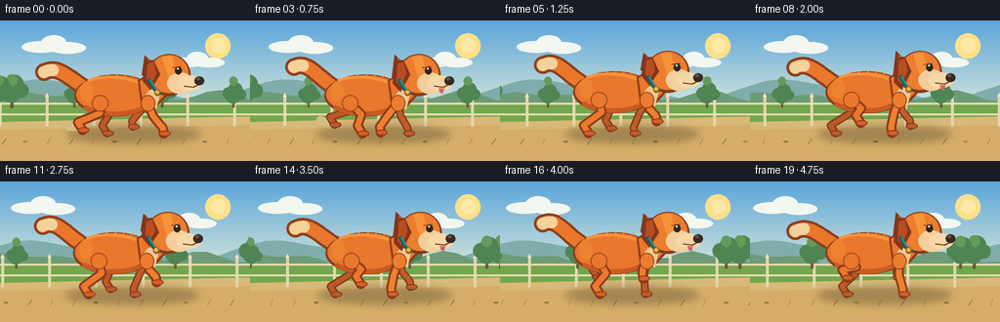
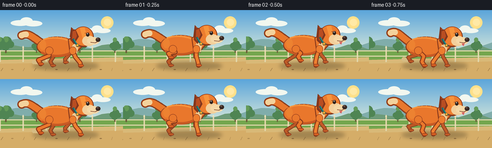

CODING AGENTS AS PIXEL WORLD MODELS
traex/GPT-5.6-Sol · instance_preservation_0000
点击播放 · 原生 RGB 像素
逐轮保存的候选
回放视频、检查图与代码变化。
每份候选均可单独播放。实际图片检查记录在下方工具轨迹中。
候选 01播放与检查图
点击播放 · 原生 RGB 像素

展开代码变化
--- 上一保存版本
+++ 本次保存版本
@@ -0,0 +1,313 @@
+from pathlib import Path
+import math
+import numpy as np
+from PIL import Image, ImageDraw, ImageFilter
+import artifact_io
+
+# Deterministic, procedural side-view animation.
+W, H, N = 256, 144, 20
+SS = 4
+TAU = math.tau
+
+
+def sc(v):
+ return int(round(v * SS))
+
+
+def box(b):
+ return tuple(sc(v) for v in b)
+
+
+def pts(seq):
+ return [(sc(x), sc(y)) for x, y in seq]
+
+
+def ellipse(d, b, fill, outline=None, width=1):
+ d.ellipse(box(b), fill=fill, outline=outline, width=sc(width) if outline else 1)
+
+
+def polygon(d, p, fill):
+ d.polygon(pts(p), fill=fill)
+
+
+def line(d, p, fill, width, joint='curve'):
+ d.line(pts(p), fill=fill, width=sc(width), joint=joint)
+ # PIL's curved joints do not always cap short strokes; round caps are explicit.
+ r = width / 2
+ for x, y in (p[0], p[-1]):
+ ellipse(d, (x-r, y-r, x+r, y+r), fill)
+
+
+def bezier(p0, p1, p2, p3, steps=24):
+ out = []
+ for i in range(steps + 1):
+ t = i / steps
+ u = 1-t
+ out.append((u**3*p0[0] + 3*u*u*t*p1[0] + 3*u*t*t*p2[0] + t**3*p3[0],
+ u**3*p0[1] + 3*u*u*t*p1[1] + 3*u*t*t*p2[1] + t**3*p3[1]))
+ return out
+
+
+def gradient_background(frame):
+ # Sky is drawn as a high-resolution vertical gradient to avoid banding.
+ hh, ww = H*SS, W*SS
+ arr = np.zeros((hh, ww, 3), np.uint8)
+ top = np.array([91, 165, 218.], float)
+ low = np.array([221, 235, 218.], float)
+ for y in range(hh):
+ q = min(1.0, y / sc(96))
+ c = top*(1-q) + low*q
+ arr[y, :, :] = c.astype(np.uint8)
+ im = Image.fromarray(arr, 'RGB')
+ d = ImageDraw.Draw(im)
+ t = frame / 4.0
+ scroll = 30.0 * t
+
+ # Warm sun and thin clouds.
+ ellipse(d, (210, 13, 236, 39), '#ffe08a')
+ ellipse(d, (216, 18, 231, 33), '#ffe9a6')
+ cloud_x = 42 - 4*t
+ for cx, cy, rx, ry in [(cloud_x, 27, 20, 6), (cloud_x+13, 23, 13, 8),
+ (cloud_x+27, 28, 19, 6), (190-3*t, 43, 17, 5),
+ (202-3*t, 39, 11, 7), (214-3*t, 43, 16, 5)]:
+ ellipse(d, (cx-rx, cy-ry, cx+rx, cy+ry), (242,247,239))
+
+ # Distant blue hills: slow parallax.
+ off = (scroll * .14) % 256
+ ridge = []
+ for x in range(-32, 321, 16):
+ wx = x + off
+ y = 70 - 8*math.sin(wx/42.0) - 4*math.sin(wx/19.0)
+ ridge.append((x, y))
+ ridge += [(320, 92), (-32, 92)]
+ polygon(d, ridge, '#80adab')
+ off2 = (scroll * .23) % 300
+ ridge2 = []
+ for x in range(-40, 340, 14):
+ wx = x + off2
+ y = 80 - 6*math.sin(wx/28.0) - 3*math.sin(wx/11.0)
+ ridge2.append((x, y))
+ ridge2 += [(340, 97), (-40, 97)]
+ polygon(d, ridge2, '#6d9b78')
+
+ # Meadow base and lighter running path.
+ polygon(d, [(-5,84),(261,84),(261,145),(-5,145)], '#74a64e')
+ polygon(d, [(-5,104),(261,98),(261,145),(-5,145)], '#d9b978')
+ polygon(d, [(-5,112),(261,107),(261,145),(-5,145)], '#d5ad68')
+
+ # Distant fence scrolls smoothly.
+ fence_shift = scroll * .55
+ fy = 91
+ for k in range(-2, 9):
+ x = k*48 - (fence_shift % 48)
+ line(d, [(x, fy-13), (x, fy+16)], '#e3d7aa', 3)
+ polygon(d, [(x-2,fy-13),(x,fy-17),(x+2,fy-13)], '#f0e5be')
+ for y in (fy-6, fy+5):
+ line(d, [(-5,y), (261,y)], '#e8ddb5', 2)
+
+ # Midground trees, kept sparse behind the dog.
+ tree_shift = scroll * .72
+ for base, scale in [(12,.82),(76,.58),(166,.72),(239,.62),(318,.78)]:
+ x = base - (tree_shift % 320)
+ if x < -30: x += 320
+ for xx in (x, x-320, x+320):
+ if -25 < xx < 281:
+ line(d, [(xx,88),(xx+1,68)], '#6c5b3a', 4*scale)
+ for ox, oy, r in [(-8,-22,10),(3,-28,12),(12,-20,9),(-1,-17,12)]:
+ ellipse(d, (xx+ox*scale-r*scale, 88+oy*scale-r*scale,
+ xx+ox*scale+r*scale, 88+oy*scale+r*scale), '#4f8553')
+ ellipse(d, (xx-7*scale, 64-11*scale,
+ xx+7*scale, 64+4*scale), '#649b59')
+
+ # Foreground grass blades and pebbles move fastest, reinforcing running.
+ fg_shift = scroll * 1.35
+ for k in range(34):
+ world = k*23 + 9
+ x = (world - fg_shift) % 782 - 260
+ if 0 <= x < W:
+ y = 124 + ((k*17) % 17)
+ col = '#9a7645' if k%3 else '#b08a51'
+ if k % 4 == 0:
+ ellipse(d, (x-2,y-1,x+3,y+1), col)
+ else:
+ line(d, [(x,y+3),(x+2+(k%3),y-3)], col, .7)
+ return im
+
+
+def paw_position(anchor_x, phase, ground=116):
+ """A planted-back / lifted-forward paw loop."""
+ p = phase % 1.0
+ if p < .54:
+ u = p / .54
+ # Paw stays near the ground while body travels over it.
+ x = anchor_x + 18 - 38*u
+ y = ground - 0.8*math.sin(math.pi*u)
+ else:
+ u = (p-.54)/.46
+ x = anchor_x - 20 + 38*u
+ y = ground - 18*math.sin(math.pi*u)
+ return x, y
+
+
+def draw_leg(d, anchor, paw, kind, fill, outline, near=True):
+ ax, ay = anchor
+ px, py = paw
+ if kind == 'rear':
+ # Canine rear leg: thigh projects forward, lower hock angles back.
+ knee = (ax + (px-ax)*.38 + 7, ay + (py-ay)*.38)
+ hock = (px - 5, py - 8)
+ path = [anchor, knee, hock, paw]
+ else:
+ elbow = (ax + (px-ax)*.46 - 2, ay + (py-ay)*.43)
+ wrist = (px - 1, py - 6)
+ path = [anchor, elbow, wrist, paw]
+ line(d, path, outline, 10 if near else 8)
+ line(d, path, fill, 6 if near else 5)
+ # Neat oval toes point in the running direction.
+ ellipse(d, (px-5, py-3, px+7, py+3), outline)
+ ellipse(d, (px-4, py-2, px+6, py+2), '#d85f22' if near else fill)
+ return knee if kind == 'rear' else elbow
+
+
+def draw_dog(frame, base):
+ d = ImageDraw.Draw(base)
+ cyc = (frame / 6.0) % 1.0
+ s = math.sin(TAU*cyc)
+ c = math.cos(TAU*cyc)
+ bob = -2.0 + 2.2*math.cos(TAU*cyc*2)
+ # Small fore/aft shift gives weight without changing the dog's identity.
+ dx = 1.3*math.sin(TAU*cyc)
+
+ # Soft contact shadow reacts subtly to airborne phases.
+ shadow = Image.new('RGBA', base.size, (0,0,0,0))
+ sd = ImageDraw.Draw(shadow)
+ sd.ellipse(box((68+dx,108,205+dx,125)), fill=(61,54,34,86))
+ shadow = shadow.filter(ImageFilter.GaussianBlur(sc(4)))
+ base.paste(shadow, (0,0), shadow)
+ d = ImageDraw.Draw(base)
+
+ # Dog coordinates. Paws follow separate loops; paired legs are phase-offset.
+ rear_anchor = (102+dx, 84+bob)
+ front_anchor = (151+dx, 84+bob)
+ phases = {
+ 'far_rear': cyc+.12,
+ 'far_front': cyc+.60,
+ 'near_rear': cyc+.57,
+ 'near_front': cyc+.05,
+ }
+ paws = {
+ 'far_rear': paw_position(100+dx, phases['far_rear']),
+ 'far_front': paw_position(151+dx, phases['far_front']),
+ 'near_rear': paw_position(102+dx, phases['near_rear']),
+ 'near_front': paw_position(153+dx, phases['near_front']),
+ }
+
+ # Dust puffs only near a recently planted paw.
+ for name in ('far_rear','near_rear'):
+ p = phases[name] % 1
+ if .48 < p < .68:
+ px, py = paws[name]
+ age = (p-.48)/.20
+ for j in range(3):
+ r = 2+j*.7+age*2
+ ellipse(d, (px-6-j*4-r, py-2-j-r, px-6-j*4+r, py-2-j+r),
+ (214,188,132))
+
+ # Tail behind everything: dark outline, orange fur, cream tip.
+ tail_wave = 4*math.sin(TAU*cyc + .7)
+ tail_curve = bezier((86+dx,68+bob), (68+dx,57+bob),
+ (59+dx,43+bob+tail_wave), (45+dx,50+bob+tail_wave), 22)
+ line(d, tail_curve, '#8d3e1e', 18)
+ line(d, tail_curve, '#e9782d', 13)
+ line(d, tail_curve[-6:], '#f3d29c', 12)
+
+ # Far legs are darker and narrower.
+ draw_leg(d, rear_anchor, paws['far_rear'], 'rear', '#bd5926', '#813a20', False)
+ draw_leg(d, front_anchor, paws['far_front'], 'front', '#c35b27', '#813a20', False)
+
+ # Main torso, with a carefully preserved warm orange coat.
+ body_box = (76+dx, 55+bob, 160+dx, 98+bob)
+ ellipse(d, body_box, '#8d3d1d')
+ ellipse(d, (78+dx,56+bob,158+dx,95+bob), '#e9772c')
+ # Belly shadow and top highlight create volume.
+ line(d, bezier((88+dx,89+bob),(108+dx,98+bob),(138+dx,98+bob),(153+dx,84+bob)), '#c95a24', 5)
+ line(d, bezier((91+dx,61+bob),(111+dx,54+bob),(136+dx,59+bob),(148+dx,66+bob)), '#f7943c', 3)
+ ellipse(d, (82+dx,62+bob,96+dx,83+bob), '#ed8231')
+
+ # Neck and cream chest ruff.
+ polygon(d, [(141+dx,61+bob),(160+dx,49+bob),(179+dx,68+bob),
+ (158+dx,91+bob),(144+dx,84+bob)], '#8c3c1d')
+ polygon(d, [(143+dx,62+bob),(159+dx,51+bob),(176+dx,68+bob),
+ (157+dx,88+bob),(146+dx,82+bob)], '#e9782c')
+ polygon(d, [(153+dx,71+bob),(165+dx,68+bob),(160+dx,91+bob),
+ (151+dx,88+bob),(146+dx,80+bob)], '#f1c98f')
+
+ # Near legs over the body. Their shoulder/hip caps keep joins organic.
+ draw_leg(d, rear_anchor, paws['near_rear'], 'rear', '#eb782c', '#8b3b1c', True)
+ ellipse(d, (94+dx,76+bob,111+dx,93+bob), '#e9782c', '#9a421e', 1)
+ draw_leg(d, front_anchor, paws['near_front'], 'front', '#ef8030', '#8b3b1c', True)
+ ellipse(d, (144+dx,76+bob,159+dx,93+bob), '#ed7d2e', '#9a421e', 1)
+
+ # Head and muzzle bob together. Slight pitching is suggested by ear motion.
+ hx, hy = 173+dx, 52+bob-0.7*s
+ # Back ear peeks out above head.
+ ear_flop = 3.5*math.sin(TAU*cyc-.4)
+ polygon(d, [(158+dx,44+bob),(148+dx,35+bob-ear_flop*.3),(145+dx,57+bob+ear_flop),
+ (160+dx,64+bob)], '#84371d')
+ polygon(d, [(158+dx,44+bob),(151+dx,38+bob-ear_flop*.2),(149+dx,55+bob+ear_flop),
+ (160+dx,61+bob)], '#bc5424')
+ # Head outline and face.
+ ellipse(d, (151+dx,34+bob,195+dx,77+bob), '#87391c')
+ ellipse(d, (153+dx,35+bob,193+dx,74+bob), '#ed7d2f')
+ # Forehead blaze / highlight.
+ polygon(d, [(166+dx,37+bob),(176+dx,36+bob),(181+dx,56+bob),
+ (172+dx,58+bob)], '#f7943b')
+ # Near floppy ear is a defining persistent feature.
+ polygon(d, [(157+dx,40+bob),(148+dx,41+bob),(146+dx,63+bob+ear_flop),
+ (154+dx,72+bob+ear_flop*.7),(164+dx,55+bob)], '#83361d')
+ polygon(d, [(157+dx,42+bob),(151+dx,44+bob),(150+dx,61+bob+ear_flop),
+ (154+dx,66+bob+ear_flop*.6),(160+dx,54+bob)], '#b94d22')
+
+ # Pale cheek and protruding muzzle establish the dog's profile.
+ ellipse(d, (171+dx,53+bob,198+dx,75+bob), '#f3cf9b')
+ ellipse(d, (181+dx,56+bob,207+dx,72+bob), '#f5d8a7')
+ ellipse(d, (199+dx,57+bob,209+dx,66+bob), '#382822')
+ ellipse(d, (201+dx,58+bob,205+dx,61+bob), '#6b5045')
+ # Eye, brow and specular point.
+ line(d, [(177+dx,48+bob),(185+dx,47+bob)], '#9c431e', 1.2)
+ ellipse(d, (179+dx,47+bob,186+dx,55+bob), '#30241f')
+ ellipse(d, (181+dx,48+bob,183+dx,50+bob), '#fff5dc')
+ # Smile and tiny tongue, kept subtle at this resolution.
+ line(d, [(189+dx,67+bob),(198+dx,68+bob),(202+dx,66+bob)], '#713521', 1.2)
+ if cyc > .18 and cyc < .72:
+ polygon(d, [(193+dx,69+bob),(199+dx,69+bob),(197+dx,75+bob),(194+dx,73+bob)], '#df6d68')
+ line(d, [(195+dx,72+bob),(197+dx,72+bob)], '#a94f53', .7)
+
+ # Teal collar and gold tag are stable identity cues.
+ line(d, [(153+dx,61+bob),(158+dx,70+bob),(163+dx,74+bob)], '#155f61', 4)
+ line(d, [(154+dx,61+bob),(159+dx,69+bob),(164+dx,73+bob)], '#2c8b88', 2)
+ ellipse(d, (158+dx,70+bob,164+dx,77+bob), '#8c5b24')
+ ellipse(d, (159+dx,71+bob,163+dx,75+bob), '#f1b83f')
+
+ # A few coat hairs along the back add tactile detail without changing silhouette.
+ for j in range(5):
+ x = 100+dx+j*9
+ y = 57+bob + (j-2)**2*.15
+ line(d, [(x,y),(x+2,y-2)], '#f79a45', .7)
+
+
+def render_frame(i):
+ im = gradient_background(i)
+ draw_dog(i, im)
+ # Downsample once for clean antialiased vector edges.
+ return np.asarray(im.resize((W,H), Image.Resampling.LANCZOS), dtype=np.uint8)
+
+
+def main():
+ frames = np.stack([render_frame(i) for i in range(N)], axis=0)
+ assert frames.shape == (20,144,256,3) and frames.dtype == np.uint8
+ artifact_io.save(frames, Path(__file__).resolve().parent)
+
+
+if __name__ == '__main__':
+ main()
可观测工具轨迹
实际执行的命令与返回图片。
命令 1exit 0
/bin/bash -lc "cat prompt.txt && printf '\\n--- GENERATION_RULES.md ---\\n' && cat GENERATION_RULES.md"
命令 2exit 0
/bin/bash -lc "cat task_spec.json && printf '\\n--- FILES ---\\n' && find . -maxdepth 2 -type f -printf '%p\\n' | sort"
命令 3exit 0
/bin/bash -lc "command -v ffmpeg; command -v python3; python3 - <<'PY' mods=['PIL','numpy','cv2','imageio','matplotlib'] for m in mods: try: mod=__import__(m); print(m,'OK',getattr(mod,'__version__','')) except Exception as e: print(m,'NO',e) PY"
命令 4exit 0
/bin/bash -lc 'cat artifact_io.py'
命令 5exit 2
/bin/bash -lc "cat > generate.py <<'PY'
from pathlib import Path
import math
import numpy as np
from PIL import Image, ImageDraw, ImageFilter
import artifact_io
# Deterministic, procedural side-view animation.
W, H, N = 256, 144, 20
SS = 4
TAU = math.tau
def sc(v):
return int(round(v * SS))
def box(b):
return tuple(sc(v) for v in b)
def pts(seq):
return [(sc(x), sc(y)) for x, y in seq]
def ellipse(d, b, fill, outline=None, width=1):
d.ellipse(box(b), fill=fill, outline=outline, width=sc(width) if outline else 1)
def polygon(d, p, fill):
d.polygon(pts(p), fill=fill)
def line(d, p, fill, width, joint='curve'):
d.line(pts(p), fill=fill, width=sc(width), joint=joint)
# PIL's curved joints do not always cap short strokes; round caps are explicit.
r = width / 2
for x, y in (p[0], p[-1]):
ellipse(d, (x-r, y-r, x+r, y+r), fill)
def bezier(p0, p1, p2, p3, steps=24):
out = []
for i in range(steps + 1):
t = i / steps
u = 1-t
out.append((u**3*p0[0] + 3*u*u*t*p1[0] + 3*u*t*t*p2[0] + t**3*p3[0],
u**3*p0[1] + 3*u*u*t*p1[1] + 3*u*t*t*p2[1] + t**3*p3[1]))
return out
def gradient_background(frame):
# Sky is drawn as a high-resolution vertical gradient to avoid banding.
hh, ww = H*SS, W*SS
arr = np.zeros((hh, ww, 3), np.uint8)
top = np.array([91, 165, 218.], float)
low = np.array([221, 235, 218.], float)
for y in range(hh):
q = min(1.0, y / sc(96))
c = top*(1-q) + low*q
arr[y, :, :] = c.astype(np.uint8)
im = Image.fromarray(arr, 'RGB')
d = ImageDraw.Draw(im)
t = frame / 4.0
scroll = 30.0 * t
# Warm sun and thin clouds.
ellipse(d, (210, 13, 236, 39), '#ffe08a')
ellipse(d, (216, 18, 231, 33), '#ffe9a6')
cloud_x = 42 - 4*t
for cx, cy, rx, ry in [(cloud_x, 27, 20, 6), (cloud_x+13, 23, 13, 8),
(cloud_x+27, 28, 19, 6), (190-3*t, 43, 17, 5),
(202-3*t, 39, 11, 7), (214-3*t, 43, 16, 5)]:
ellipse(d, (cx-rx, cy-ry, cx+rx, cy+ry), (242,247,239))
# Distant blue hills: slow parallax.
off = (scroll * .14) % 256
ridge = []
for x in range(-32, 321, 16):
wx = x + off
y = 70 - 8*math.sin(wx/42.0) - 4*math.sin(wx/19.0)
ridge.append((x, y))
ridge += [(320, 92), (-32, 92)]
polygon(d, ridge, '#80adab')
off2 = (scroll * .23) % 300
ridge2 = []
for x in range(-40, 340, 14):
wx = x + off2
y = 80 - 6*math.sin(wx/28.0) - 3*math.sin(wx/11.0)
ridge2.append((x, y))
ridge2 += [(340, 97), (-40, 97)]
polygon(d, ridge2, '#6d9b78')
# Meadow base and lighter running path.
polygon(d, [(-5,84),(261,84),(261,145),(-5,145)], '#74a64e')
polygon(d, [(-5,104),(261,98),(261,145),(-5,145)], '#d9b978')
polygon(d, [(-5,112),(261,107),(261,145),(-5,145)], '#d5ad68')
# Distant fence scrolls smoothly.
fence_shift = scroll * .55
fy = 91
for k in range(-2, 9):
x = k*48 - (fence_shift % 48)
line(d, [(x, fy-13), (x, fy+16)], '#e3d7aa', 3)
polygon(d, [(x-2,fy-13),(x,fy-17),(x+2,fy-13)], '#f0e5be')
for y in (fy-6, fy+5):
line(d, [(-5,y), (261,y)], '#e8ddb5', 2)
# Midground trees, kept sparse behind the dog.
tree_shift = scroll * .72
for base, scale in [(12,.82),(76,.58),(166,.72),(239,.62),(318,.78)]:
x = base - (tree_shift % 320)
if x < -30: x += 320
for xx in (x, x-320, x+320):
if -25 < xx < 281:
line(d, [(xx,88),(xx+1,68)], '#6c5b3a', 4*scale)
for ox, oy, r in [(-8,-22,10),(3,-28,12),(12,-20,9),(-1,-17,12)]:
ellipse(d, (xx+ox*scale-r*scale, 88+oy*scale-r*scale,
xx+ox*scale+r*scale, 88+oy*scale+r*scale), '#4f8553')
ellipse(d, (xx-7*scale,55*1 + (1-scale)*88,xx+7*scale,69+(1-scale)*19), '#649b59')
# Foreground grass blades and pebbles move fastest, reinforcing running.
fg_shift = scroll * 1.35
for k in range(34):
world = k*23 + 9
x = (world - fg_shift) % 782 - 260
if 0 <= x < W:
y = 124 + ((k*17) % 17)
col = '#9a7645' if k%3 else '#b08a51'
if k % 4 == 0:
ellipse(d, (x-2,y-1,x+3,y+1), col)
else:
line(d, [(x,y+3),(x+2+(k%3),y-3)], col, .7)
return im
def paw_position(anchor_x, phase, ground=116):
\"\"\"A planted-back / lifted-forward paw loop.\"\"\"
p = phase % 1.0
if p < .54:
u = p / .54
# Paw stays near the ground while body travels over it.
x = anchor_x + 18 - 38*u
y = ground - 0.8*math.sin(math.pi*u)
else:
u = (p-.54)/.46
x = anchor_x - 20 + 38*u
y = ground - 18*math.sin(math.pi*u)
return x, y
def draw_leg(d, anchor, paw, kind, fill, outline, near=True):
ax, ay = anchor
px, py = paw
if kind == 'rear':
# Canine rear leg: thigh projects forward, lower hock angles back.
knee = (ax + (px-ax)*.38 + 7, ay + (py-ay)*.38)
hock = (px - 5, py - 8)
path = [anchor, knee, hock, paw]
else:
elbow = (ax + (px-ax)*.46 - 2, ay + (py-ay)*.43)
wrist = (px - 1, py - 6)
path = [anchor, elbow, wrist, paw]
line(d, path, outline, 10 if near else 8)
line(d, path, fill, 6 if near else 5)
# Neat oval toes point in the running direction.
ellipse(d, (px-5, py-3, px+7, py+3), outline)
ellipse(d, (px-4, py-2, px+6, py+2), '#d85f22' if near else fill)
return knee if kind == 'rear' else elbow
def draw_dog(frame, base):
d = ImageDraw.Draw(base)
cyc = (frame / 6.0) % 1.0
s = math.sin(TAU*cyc)
c = math.cos(TAU*cyc)
bob = -2.0 + 2.2*math.cos(TAU*cyc*2)
# Small fore/aft shift gives weight without changing the dog's identity.
dx = 1.3*math.sin(TAU*cyc)
# Soft contact shadow reacts subtly to airborne phases.
shadow = Image.new('RGBA', base.size, (0,0,0,0))
sd = ImageDraw.Draw(shadow)
sd.ellipse(box((68+dx,108,205+dx,125)), fill=(61,54,34,86))
shadow = shadow.filter(ImageFilter.GaussianBlur(sc(4)))
base.paste(shadow, (0,0), shadow)
d = ImageDraw.Draw(base)
# Dog coordinates. Paws follow separate loops; paired legs are phase-offset.
rear_anchor = (102+dx, 84+bob)
front_anchor = (151+dx, 84+bob)
phases = {
'far_rear': cyc+.12,
'far_front': cyc+.60,
'near_rear': cyc+.57,
'near_front': cyc+.05,
}
paws = {
'far_rear': paw_position(100+dx, phases['far_rear']),
'far_front': paw_position(151+dx, phases['far_front']),
'near_rear': paw_position(102+dx, phases['near_rear']),
'near_front': paw_position(153+dx, phases['near_front']),
}
# Dust puffs only near a recently planted paw.
for name in ('far_rear','near_rear'):
p = phases[name] % 1
if .48 < p < .68:
px, py = paws[name]
age = (p-.48)/.20
for j in range(3):
r = 2+j*.7+age*2
ellipse(d, (px-6-j*4-r, py-2-j-r, px-6-j*4+r, py-2-j+r),
(214,188,132))
# Tail behind everything: dark outline, orange fur, cream tip.
tail_wave = 4*math.sin(TAU*cyc + .7)
tail_curve = bezier((86+dx,68+bob), (68+dx,57+bob),
(59+dx,43+bob+tail_wave), (45+dx,50+bob+tail_wave), 22)
line(d, tail_curve, '#8d3e1e', 18)
line(d, tail_curve, '#e9782d', 13)
line(d, tail_curve[-6:], '#f3d29c', 12)
# Far legs are darker and narrower.
draw_leg(d, rear_anchor, paws['far_rear'], 'rear', '#bd5926', '#813a20', False)
draw_leg(d, front_anchor, paws['far_front'], 'front', '#c35b27', '#813a20', False)
# Main torso, with a carefully preserved warm orange coat.
body_box = (76+dx, 55+bob, 160+dx, 98+bob)
ellipse(d, body_box, '#8d3d1d')
ellipse(d, (78+dx,56+bob,158+dx,95+bob), '#e9772c')
# Belly shadow and top highlight create volume.
line(d, bezier((88+dx,89+bob),(108+dx,98+bob),(138+dx,98+bob),(153+dx,84+bob)), '#c95a24', 5)
line(d, bezier((91+dx,61+bob),(111+dx,54+bob),(136+dx,59+bob),(148+dx,66+bob)), '#f7943c', 3)
ellipse(d, (82+dx,62+bob,96+dx,83+bob), '#ed8231')
# Neck and cream chest ruff.
polygon(d, [(141+dx,61+bob),(160+dx,49+bob),(179+dx,68+bob),
(158+dx,91+bob),(144+dx,84+bob)], '#8c3c1d')
polygon(d, [(143+dx,62+bob),(159+dx,51+bob),(176+dx,68+bob),
(157+dx,88+bob),(146+dx,82+bob)], '#e9782c')
polygon(d, [(153+dx,71+bob),(165+dx,68+bob),(160+dx,91+bob),
(151+dx,88+bob),(146+dx,80+bob)], '#f1c98f')
# Near legs over the body. Their shoulder/hip caps keep joins organic.
draw_leg(d, rear_anchor, paws['near_rear'], 'rear', '#eb782c', '#8b3b1c', True)
ellipse(d, (94+dx,76+bob,111+dx,93+bob), '#e9782c', '#9a421e', 1)
draw_leg(d, front_anchor, paws['near_front'], 'front', '#ef8030', '#8b3b1c', True)
ellipse(d, (144+dx,76+bob,159+dx,93+bob), '#ed7d2e', '#9a421e', 1)
# Head and muzzle bob together. Slight pitching is suggested by ear motion.
hx, hy = 173+dx, 52+bob-0.7*s
# Back ear peeks out above head.
ear_flop = 3.5*math.sin(TAU*cyc-.4)
polygon(d, [(158+dx,44+bob),(148+dx,35+bob-ear_flop*.3),(145+dx,57+bob+ear_flop),
(160+dx,64+bob)], '#84371d')
polygon(d, [(158+dx,44+bob),(151+dx,38+bob-ear_flop*.2),(149+dx,55+bob+ear_flop),
(160+dx,61+bob)], '#bc5424')
# Head outline and face.
ellipse(d, (151+dx,34+bob,195+dx,77+bob), '#87391c')
ellipse(d, (153+dx,35+bob,193+dx,74+bob), '#ed7d2f')
# Forehead blaze / highlight.
polygon(d, [(166+dx,37+bob),(176+dx,36+bob),(181+dx,56+bob),
(172+dx,58+bob)], '#f7943b')
# Near floppy ear is a defining persistent feature.
polygon(d, [(157+dx,40+bob),(148+dx,41+bob),(146+dx,63+bob+ear_flop),
(154+dx,72+bob+ear_flop*.7),(164+dx,55+bob)], '#83361d')
polygon(d, [(157+dx,42+bob),(151+dx,44+bob),(150+dx,61+bob+ear_flop),
(154+dx,66+bob+ear_flop*.6),(160+dx,54+bob)], '#b94d22')
# Pale cheek and protruding muzzle establish the dog's profile.
ellipse(d, (171+dx,53+bob,198+dx,75+bob), '#f3cf9b')
ellipse(d, (181+dx,56+bob,207+dx,72+bob), '#f5d8a7')
ellipse(d, (199+dx,57+bob,209+dx,66+bob), '#382822')
ellipse(d, (201+dx,58+bob,205+dx,61+bob), '#6b5045')
# Eye, brow and specular point.
line(d, [(177+dx,48+bob),(185+dx,47+bob)], '#9c431e', 1.2)
ellipse(d, (179+dx,47+bob,186+dx,55+bob), '#30241f')
ellipse(d, (181+dx,48+bob,183+dx,50+bob), '#fff5dc')
# Smile and tiny tongue, kept subtle at this resolution.
line(d, [(189+dx,67+bob),(198+dx,68+bob),(202+dx,66+bob)], '#713521', 1.2)
if cyc > .18 and cyc < .72:
polygon(d, [(193+dx,69+bob),(199+dx,69+bob),(197+dx,75+bob),(194+dx,73+bob)], '#df6d68')
line(d, [(195+dx,72+bob),(197+dx,72+bob)], '#a94f53', .7)
# Teal collar and gold tag are stable identity cues.
line(d, [(153+dx,61+bob),(158+dx,70+bob),(163+dx,74+bob)], '#155f61', 4)
line(d, [(154+dx,61+bob),(159+dx,69+bob),(164+dx,73+bob)], '#2c8b88', 2)
ellipse(d, (158+dx,70+bob,164+dx,77+bob), '#8c5b24')
ellipse(d, (159+dx,71+bob,163+dx,75+bob), '#f1b83f')
# A few coat hairs along the back add tactile detail without changing silhouette.
for j in range(5):
x = 100+dx+j*9
y = 57+bob + (j-2)**2*.15
line(d, [(x,y),(x+2,y-2)], '#f79a45', .7)
def render_frame(i):
im = gradient_background(i)
draw_dog(i, im)
# Downsample once for clean antialiased vector edges.
return np.asarray(im.resize((W,H), Image.Resampling.LANCZOS), dtype=np.uint8)
def main():
frames = np.stack([render_frame(i) for i in range(N)], axis=0)
assert frames.shape == (20,144,256,3) and frames.dtype == np.uint8
artifact_io.save(frames, Path(__file__).resolve().parent)
if __name__ == '__main__':
main()
PY
python3 generate.py
ls -lh pixels.npz inspection.png transition_check.png index.html frames/00.png frames/19.png"命令 6exit 0
/bin/bash -lc 'python3 generate.py && ls -lh pixels.npz inspection.png transition_check.png index.html frames/00.png frames/19.png'
命令 7exit 0
/bin/bash -lc "find . -maxdepth 2 -type f -printf '%p %s bytes\\n' | sort | head -80"
命令 8exit 0
/bin/bash -lc "python3 - <<'PY'
from pathlib import Path
import numpy as np
from PIL import Image
p=np.load('pixels.npz')['pixels']
print('packed shape/dtype:',p.shape,p.dtype)
ims=np.stack([np.asarray(Image.open(f'frames/{i:02d}.png').convert('RGB')) for i in range(20)])
print('frames:',ims.shape,ims.dtype,'range',ims.min(),ims.max())
print('unique frame hashes:',len({__import__('hashlib').sha256(x.tobytes()).hexdigest() for x in ims}))
print('mean adjacent absolute delta:',round(float(np.abs(np.diff(ims.astype(np.int16),axis=0)).mean()),3))
print('all RGB:',all(Image.open(f'frames/{i:02d}.png').mode=='RGB' for i in range(20)))
assert p.shape==(144,256,20)
assert ims.shape==(20,144,256,3) and ims.dtype==np.uint8
assert len({x.tobytes() for x in ims})==20
PY"视觉工具实际返回图片 1

视觉工具实际返回图片 2

保存候选 1 份；完成命令 8 次；可验证图片返回 2 张。原始 API 响应与完整日志保留在本地。